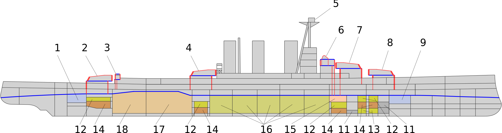

«Та́йгер» (англ. HMS Tiger, Корабль Его Величества «Тайгер») — линейный крейсер Королевского военно-морского флота Великобритании времён Первой мировой войны, единственный корабль этого проекта. Являлся развитием проекта линейного крейсера «Куин Мэри», получив те же восемь 343-мм орудий главного калибра и сходную схему бронирования. Как и на современных ему линкорах типа «Айрон Дюк», на «Тайгере», вместо применявшихся ранее 102-мм, были установлены 152-мм орудия противоминного калибра. Каземат этих орудий получил бронирование толщиной 152 мм, что увеличило общую площадь забронированного борта. С оглядкой на японский опыт, был установлен подводный 76-мм пояс, как на японских линейных крейсерах типа «Конго». Количество торпедных аппаратов было увеличено до четырёх. Наиболее мощный и совершенный британский линейный крейсер, построенный до начала Первой мировой войны. Считался самым красивым кораблём Королевского флота. Современные ему германские крейсера типа «Дерфлингер» имели вооружение из 305-мм орудий. За счёт большей начальной скорости и совершенства снарядов германское 305-мм орудие практически не уступало британскому 343-мм. По скорости и мореходности «Тайгер» превосходил своих визави, но уступал им по защищённости. Специалисты считают, что по комплексу характеристик британский крейсер уступал более сбалансированному «Дерфлингеру». «Тайгер» активно использовался в годы Первой мировой войны, находясь в составе 1-й эскадры линейных крейсеров. Под командованием адмирала Битти 1-я эскадра, вместе с «Тайгером», приняла участие в бою у Доггер-банки и Ютландском сражении. По условиям Лондонского договора 1930 года по сокращению морских вооружений «Тайгер» 30 марта 1931 года был выведен из состава флота и продан на слом.
 Продольный разрез линейного крейсера «Тайгер» 1 — кормовой отсек ТА; 2 — башня ГК «Y»; 3 — задняя боевая рубка для управления торпедной стрельбой; 4 — башня ГК «Q»; 5 — командно-дальномерный пост на фок-мачте; 6 — передняя боевая рубка; 7 — башня ГК «В»; 8 — башня ГК «А»; 9 — носовой отсек ТА; 11 — цистерны с нефтью; 12 — зарядные погреба ГК; 13 — погреба СК; 14 — снарядный погреб ГК; 15 — центральный пост управления; 16 — котельные отделения; 17 — машинные отделения; 18 — вспомогательные машинные отделения.